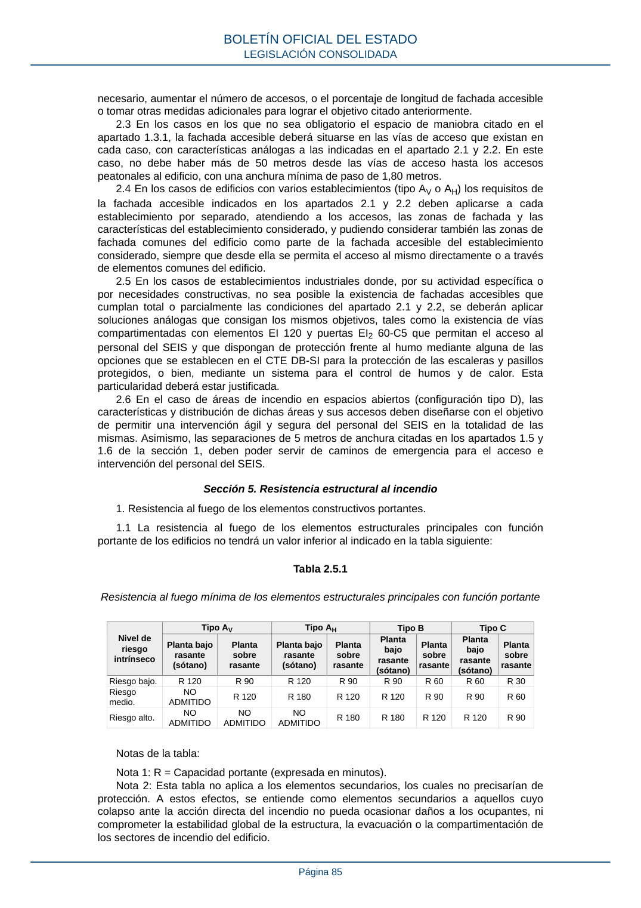

RSCIEI · Página 85 · versión 2025-04-10
SHA256: 85aa0af25d51e5b58d8975a4eefbf76d3f57a8933445cfe814ae9c4818a2e3e7 · página física 85 de 108 · métodos de encabezado
solo si están cotejados.
Formatos: Markdown · JSON de bloques · PDF p. 85 · imagen PNG
necesario, aumentar el número de accesos, o el porcentaje de longitud de fachada accesible o tomar otras medidas adicionales para lograr el objetivo citado anteriormente. 2.3 En los casos en los que no sea obligatorio el espacio de maniobra citado en el apartado 1.3.1, la fachada accesible deberá situarse en las vías de acceso que existan en cada caso, con características análogas a las indicadas en el apartado 2.1 y 2.2. En este caso, no debe haber más de 50 metros desde las vías de acceso hasta los accesos peatonales al edificio, con una anchura mínima de paso de 1,80 metros. 2.4 En los casos de edificios con varios establecimientos (tipo AV o AH) los requisitos de la fachada accesible indicados en los apartados 2.1 y 2.2 deben aplicarse a cada establecimiento por separado, atendiendo a los accesos, las zonas de fachada y las características del establecimiento considerado, y pudiendo considerar también las zonas de fachada comunes del edificio como parte de la fachada accesible del establecimiento considerado, siempre que desde ella se permita el acceso al mismo directamente o a través de elementos comunes del edificio. 2.5 En los casos de establecimientos industriales donde, por su actividad específica o por necesidades constructivas, no sea posible la existencia de fachadas accesibles que cumplan total o parcialmente las condiciones del apartado 2.1 y 2.2, se deberán aplicar soluciones análogas que consigan los mismos objetivos, tales como la existencia de vías compartimentadas con elementos EI 120 y puertas EI2 60-C5 que permitan el acceso al personal del SEIS y que dispongan de protección frente al humo mediante alguna de las opciones que se establecen en el CTE DB-SI para la protección de las escaleras y pasillos protegidos, o bien, mediante un sistema para el control de humos y de calor. Esta particularidad deberá estar justificada. 2.6 En el caso de áreas de incendio en espacios abiertos (configuración tipo D), las características y distribución de dichas áreas y sus accesos deben diseñarse con el objetivo de permitir una intervención ágil y segura del personal del SEIS en la totalidad de las mismas. Asimismo, las separaciones de 5 metros de anchura citadas en los apartados 1.5 y 1.6 de la sección 1, deben poder servir de caminos de emergencia para el acceso e intervención del personal del SEIS. Sección 5. Resistencia estructural al incendio 1. Resistencia al fuego de los elementos constructivos portantes. 1.1 La resistencia al fuego de los elementos estructurales principales con función portante de los edificios no tendrá un valor inferior al indicado en la tabla siguiente: Tabla 2.5.1 Resistencia al fuego mínima de los elementos estructurales principales con función portante Nivel de riesgo intrínseco Tipo AV Tipo AH Tipo B Tipo C Planta bajo rasante (sótano) Planta sobre rasante Planta bajo rasante (sótano) Planta sobre rasante Planta bajo rasante (sótano) Planta sobre rasante Planta bajo rasante (sótano) Planta sobre rasante Riesgo bajo. R 120 R 90 R 120 R 90 R 90 R 60 R 60 R 30 Riesgo medio. NO ADMITIDO R 120 R 180 R 120 R 120 R 90 R 90 R 60 Riesgo alto. NO ADMITIDO NO ADMITIDO NO ADMITIDO R 180 R 180 R 120 R 120 R 90 Notas de la tabla: Nota 1: R = Capacidad portante (expresada en minutos). Nota 2: Esta tabla no aplica a los elementos secundarios, los cuales no precisarían de protección. A estos efectos, se entiende como elementos secundarios a aquellos cuyo colapso ante la acción directa del incendio no pueda ocasionar daños a los ocupantes, ni comprometer la estabilidad global de la estructura, la evacuación o la compartimentación de los sectores de incendio del edificio. BOLETÍN OFICIAL DEL ESTADO LEGISLACIÓN CONSOLIDADA Página 85
